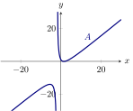
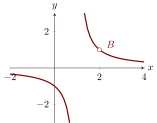
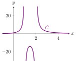
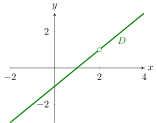

Rational functions are functions defined by fractions of polynomials.
There is a somewhat wide variation in the graphs of rational functions.
|  |  |
|  |  |
Now consider . This function is undefined only at . The only function above that undefined exactly at is curve .
Now consider . This function is undefined at the roots of Hence it is undefined at and . It looks like both curves and would work. Distinguishing between these two curves is easy enough if we evaluate at . Check it out.
Since this is negative, we see that corresponds to curve .Finally, it must be the case that curve corresponds to . We should note that if this function is evaluated at , the output is zero, and this corroborates our work above.